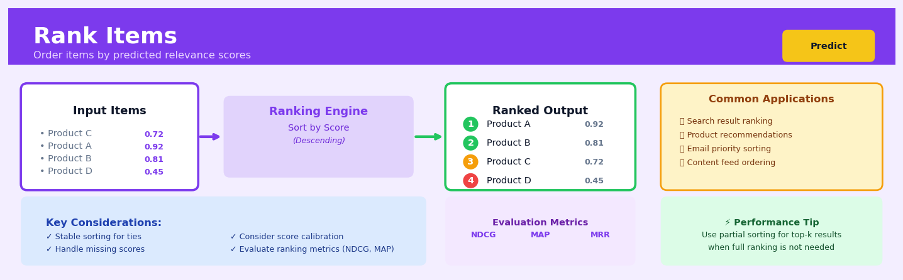

Rank Items#


The most common mistake with ranking is treating it as a simple descending sort without considering tied scores. Always implement stable sorting to ensure reproducible rankings when scores are identical, and consider adding a secondary tiebreaker like item ID or timestamp. For production systems, be mindful that full sorting of large catalogs is wasteful when you only need the top 10 results—use heap-based partial sorting algorithms to dramatically improve performance.
The 60-Second Version#
What it does: Rank Items learns from examples to automatically sort lists—like search results, product recommendations, or job candidates—in the order most relevant to each user or query.
When to use it: When you need to present multiple options to users and the order matters more than the score—whether that’s ranking loan applications by approval likelihood, personalising product displays, or prioritising support tickets.
What you get back: A trained model that takes any new set of items and outputs them in optimised order, which you use to directly control what users see first.
Difficulty |
Advanced |
Typical runtime |
Minutes to hours on 100K items |
What you bring |
Items with features, relevance labels or preferences, and query/context data |
What you get |
A ranking model that orders new item sets by predicted relevance |
Heuristix bucket |
Predict — Machine Learning & Forecasting |
Position at the top directly shapes user behaviour—small ranking changes can dramatically affect clicks, conversions, and fairness.
Learning Objectives#
After reading this chapter, a business user will be able to:
Identify business scenarios where relative ordering matters more than absolute scores—such as personalising search results, prioritising sales leads, or sequencing content recommendations—and distinguish these from classification or regression problems.
Interpret ranking outputs by explaining what position changes mean for user experience, conversion rates, or business metrics, and translate ranking quality scores (like NDCG or MAP) into stakeholder-friendly language about how well the system orders items.
Decide which items to surface first in customer-facing applications by evaluating trade-offs between relevance, diversity, and business constraints like inventory availability or profit margins.
After reading this chapter, a data scientist will be able to:
Implement pointwise, pairwise, and listwise ranking approaches using appropriate libraries, correctly format training data with query groups and relevance judgments, and handle queries with varying numbers of candidate items.
Tune key hyperparameters such as the number of trees, learning rate, and ranking loss function while understanding how each affects the balance between top-position accuracy versus overall list quality.
Validate ranking models using position-aware metrics (NDCG, MAP, MRR), diagnose common failures like position bias in training data or poor performance on rare queries, and detect when a simpler scoring approach would suffice.
Overview#
Rank Items is a supervised machine learning technique that learns to order a set of items according to their relevance, preference, or utility relative to a given query or context. Unlike classification (which predicts categories) or regression (which predicts continuous values), ranking focuses on producing an optimal ordering of items—making it the foundational technique behind search engines, recommendation systems, and any application where the relative position of items matters more than their absolute scores. Rank Items belongs to the family of Learning to Rank (LTR) methods, which combine ideas from information retrieval, preference learning, and supervised machine learning to directly optimise ranking quality metrics.
When to Use This#
Use this when you need to order search results by relevance — When users submit queries and you must return documents, products, or entities sorted by how well they match the query intent, not just keyword overlap.
Use this when building a recommendation system that must prioritise items — When you have more candidate items than you can show and must select and order the top-\(k\) items a user is most likely to engage with.
Use this when optimising for metrics like NDCG, MAP, or MRR — When your business KPIs are ranking metrics rather than accuracy or RMSE, you need a model that directly optimises these objectives.
Use this when you have graded relevance labels — When your training data includes relevance scores (e.g., 0–4 stars, click-through rates, conversion rates) rather than simple binary labels, ranking models can exploit this richer signal.
Use this when relative ordering matters more than absolute scores — When the business decision depends on “which item should appear first?” rather than “what is this item’s exact score?”, ranking is the appropriate framing.
Use this when you have query-document pairs with contextual features — When the relevance of an item depends on the query context (e.g., the same product may be highly relevant to one search and irrelevant to another).
Do NOT use this when you only need to predict a single value — If you simply need to estimate a continuous outcome for individual items without comparison, use regression instead.
Do NOT use this when you have no notion of queries or groups — Ranking assumes items are grouped by query/context; if items are independent observations, classification or regression is more appropriate.
Do NOT use this when you have binary outcomes and care about probability calibration — If you need well-calibrated probabilities for downstream decisions, a classification model with proper calibration may be more suitable.
Do NOT use this when your item set is static and unchanging — If you always rank the same small fixed set of items, simple rules or manual ordering may suffice.
Questions This Answers#
Search and Discovery#
Which 10 products should we show first when someone searches for “running shoes” to maximize purchases?
How do we rank our 50,000 help articles so customers find the answer to their problem in the first three results?
Should we prioritize newer listings or higher-rated ones when someone filters hotels by “family-friendly” in Barcelona?
What order should we display these 200 job candidates to our hiring managers so they interview the best fits first?
Which content should appear at the top of the feed for each user to keep them engaged for the next 30 minutes?
Recommendations and Personalization#
What’s the best order to show these 15 recommended products to increase the chance this customer adds something to their cart?
Should we recommend the high-margin item or the frequently-purchased item first to this repeat customer?
How do we rank potential upsells at checkout so we maximize order value without annoying customers?
Which three articles should we feature in the “You might also like” section for readers who just finished this blog post?
When a customer opens our app, what order of deals and promotions will drive the highest conversion in the next 24 hours?
Prioritization and Resource Allocation#
Out of 500 incoming support tickets, which 20 should our team handle first to minimize customer churn?
How should we rank these 100 sales leads so our reps call the most likely to convert this week?
Which maintenance requests should appear at the top of our property manager’s dashboard each morning?
What’s the optimal order to show these 30 investment opportunities to each client based on their portfolio and risk profile?
How It Works#
Imagine you’re a talent show judge training a new assistant to rank performances. You don’t just teach them to score each act in isolation—you show them pairs of performances and explain which was better and why. “The magician was better than the juggler because the crowd gasped.” “The singer beat the comedian because of technical skill.” Over hundreds of these comparisons, your assistant learns what makes one act rank higher than another. Now when new performers appear, they can arrange them in order from best to worst, even though they’ve never seen these specific acts before. That’s exactly what Rank Items does: it learns from examples of “A is better than B” to create an ordering system that works on completely new items.
TRAINING: Learning from compared items
┌─────────────────────────────────────────────────────┐
│ Query: "best laptop for students" │
├─────────────────────────────────────────────────────┤
│ │
│ Item A (features) ─┐ │
│ [price:$800, │ Label: A ranked │
│ battery:10hrs] ├─────→ HIGHER than B │
│ Item B (features) ─┘ │
│ [price:$1200, │
│ battery:8hrs] │
│ │
│ Item C ─┐ │
│ ├─────→ C ranked LOWER than B │
│ Item B ─┘ │
└─────────────────────────────────────────────────────┘
↓
Model learns which features
predict better rankings
↓
PREDICTION: Ordering new items
┌─────────────────────────────────────────────────────┐
│ Query: "best laptop for students" │
├─────────────────────────────────────────────────────┤
│ New items (unordered): │
│ • Item X [price:$700, battery:12hrs] │
│ • Item Y [price:$900, battery:9hrs] │
│ • Item Z [price:$1500, battery:7hrs] │
│ │
│ Model applies learned rules │
│ ↓ │
│ Ranked output: │
│ 1. Item X ⭐⭐⭐ │
│ 2. Item Y ⭐⭐ │
│ 3. Item Z ⭐ │
└─────────────────────────────────────────────────────┘
Step 1: Collect examples where items have already been ranked for specific queries. For a shopping site, this might be past searches where you know which products customers clicked first, second, and third. Each example includes the query, the items shown, their features (price, ratings, description words), and their correct order.
Step 2: Convert these rankings into training signals. The algorithm doesn’t need to know “Item A gets score 8.5”—it only needs to learn relationships like “Item A should appear above Item B” and “Item B should appear above Item C.” These pairwise comparisons become the building blocks of learning.
Step 3: Extract features that might explain why one item ranks higher than another. These could be properties of the item itself (brand, price, customer rating), properties of the query (how many words match), or relationships between them (does the item category match the query intent?).
Step 4: Train a model to predict which item in any pair should rank higher. The algorithm adjusts its internal rules thousands of times, learning patterns like “when the query mentions ‘cheap,’ items with lower prices should rank higher” or “longer battery life predicts better rankings for student laptop searches.”
Step 5: When new items arrive with a new query, the model uses its learned rules to evaluate every possible pair, then assembles these judgments into a complete ordered list from most relevant to least relevant.
The key insight: By learning from relative comparisons rather than absolute scores, Rank Items captures the subtle trade-offs and context-dependent preferences that determine what makes one item better than another for a specific purpose.
The Intuition#
Imagine you are a librarian helping patrons find books. When someone asks for “books about machine learning for beginners,” your job is not to predict whether each book is “good” or “bad” in absolute terms—your job is to decide which books should go on top of the pile you hand to the patron. The book at position one should be more relevant than the book at position two, which should be more relevant than position three, and so on. This is fundamentally a ranking problem: you care about the relative ordering, not absolute judgments.
Traditional regression would train a model to predict some score (say, relevance from 0 to 5) for each book independently, and then you would sort by that score. This seems reasonable, but it has a critical flaw: the regression model is penalised equally for errors regardless of where they occur in the ranking. Predicting 2.1 instead of 2.0 for a book that ends up at position 50 incurs the same loss as the same error for the book at position 1—but users almost never see position 50! The top of the ranking matters far more than the bottom.
Learning to Rank methods address this by training models that directly consider pairs or lists of items and optimise objectives that align with ranking quality. The pointwise approach treats each item independently (like regression), the pairwise approach considers pairs of items and learns to predict which should rank higher, and the listwise approach considers entire ranked lists and directly optimises ranking metrics. The pairwise intuition is particularly elegant: if you can correctly determine “item A should rank above item B” for all relevant pairs, the correct full ranking emerges. This framing transforms the ranking problem into millions of binary comparison problems, which standard machine learning can handle efficiently.
The key insight is that ranking is about relative preferences, not absolute values. A model that consistently gets the ordering right—even if its predicted scores are on a completely different scale—is a perfect ranking model. This is why ranking metrics like NDCG and MAP ignore absolute score values and focus entirely on whether the correct items appear at the top of the ranked list.
The Mathematics#
Problem Formulation#
Let \(\mathcal{Q} = \{q_1, q_2, \ldots, q_m\}\) denote a set of queries. For each query \(q_i\), we have an associated set of items (documents) \(\mathcal{D}_i = \{d_{i1}, d_{i2}, \ldots, d_{i,n_i}\}\) to be ranked. Each query-document pair \((q_i, d_{ij})\) has a feature vector \(\mathbf{x}_{ij} \in \mathbb{R}^p\) and a ground-truth relevance label \(y_{ij} \in \mathcal{Y}\).
The relevance labels may be:
Binary: \(\mathcal{Y} = \{0, 1\}\) (irrelevant/relevant)
Graded: \(\mathcal{Y} = \{0, 1, 2, \ldots, r\}\) (degrees of relevance)
Continuous: \(\mathcal{Y} = \mathbb{R}\) (e.g., click-through rates)
The goal is to learn a scoring function \(f: \mathbb{R}^p \to \mathbb{R}\) such that for query \(q_i\), sorting items by \(f(\mathbf{x}_{ij})\) in descending order produces a ranking that places highly relevant items at the top.
Ranking Approaches#
Pointwise Approach#
The pointwise approach treats ranking as a regression or classification problem on individual items:
where \(\ell\) is a standard loss function (squared error, cross-entropy, etc.). This approach ignores the structure of the ranking problem—it does not consider that items within the same query compete with each other.
Pairwise Approach#
The pairwise approach considers pairs of items within each query and learns to predict their relative ordering. For query \(q_i\), define the set of preference pairs:
The pairwise loss encourages \(f(\mathbf{x}_{ij}) > f(\mathbf{x}_{ik})\) whenever \(y_{ij} > y_{ik}\):
RankNet uses the cross-entropy loss on the probability that item \(j\) should be ranked above item \(k\):
where \(\sigma\) is a scaling parameter. The loss is:
where \(\bar{P}_{jk} = \frac{1}{2}(1 + S_{jk})\) and \(S_{jk} \in \{-1, 0, 1\}\) indicates whether item \(j\) should rank above, equal to, or below item \(k\).
Listwise Approach#
Listwise methods directly optimise ranking metrics. The challenge is that metrics like NDCG are non-differentiable (they depend on discrete ranks). LambdaRank addresses this by defining gradients implicitly:
where \(\Delta \text{NDCG}_{jk}\) is the change in NDCG from swapping items \(j\) and \(k\) in the current ranking. This “lambda gradient” directly incorporates the ranking metric into the optimisation.
LambdaMART combines LambdaRank with gradient boosted decision trees, using lambdas as the gradients for the boosting procedure.
Evaluation Metrics#
Discounted Cumulative Gain (DCG)#
where \(\pi(i)\) is the item at rank \(i\). The numerator gives higher weight to more relevant items; the denominator discounts items at lower ranks.
Normalised DCG (NDCG)#
where \(\text{IDCG}@k\) is the DCG of the ideal ranking (items sorted by true relevance). NDCG ranges from 0 to 1.
Mean Average Precision (MAP)#
For binary relevance:
where \(P(k)\) is precision at rank \(k\) and \(|\text{rel}|\) is the total number of relevant items. MAP is the mean of AP across queries.
Mean Reciprocal Rank (MRR)#
where \(\text{rank}_i\) is the rank of the first relevant item for query \(i\).
Assumptions#
Conditional independence given features: The relevance of an item depends only on its features and the query, not on other items in the set.
Consistent preference ordering: If \(y_j > y_k\), then item \(j\) should always rank above item \(k\) for the given query.
Feature informativeness: The feature vector \(\mathbf{x}_{ij}\) contains sufficient information to determine relative relevance.
Label quality: Ground-truth labels accurately reflect the desired ranking (no systematic label noise or bias).
Edge Cases#
All items equally relevant: When all \(y_{ij}\) are identical for a query, any ordering is optimal and NDCG = 1.
Single item per query: Ranking is trivial; the method reduces to pointwise scoring.
Highly imbalanced relevance: When very few items are relevant, pairwise methods may struggle with the extreme class imbalance in pairs.
Understanding the Mathematics#
Pairwise Ranking: The Core Optimization Function#
Read it aloud: The loss equals the sum over all items, then the sum over all pairs where item i should rank higher than item j, of the logarithm of one plus e raised to the negative difference between their scores.
What each symbol means:
\(\mathcal{L}\) = total loss (error we want to minimize)
\(n\) = number of items to rank
\(y_i\) and \(y_j\) = true relevance labels for items i and j
\(s_i\) and \(s_j\) = predicted scores our model assigns to items i and j
\(e\) = Euler’s number (≈2.718)
\(\log\) = natural logarithm
A concrete numerical example: You’re ranking three hotel search results. Hotel A (luxury) has true relevance 5, Hotel B (mid-range) has 3, Hotel C (budget) has 1. Your model scores them as \(s_A = 0.8\), \(s_B = 0.6\), \(s_C = 0.4\). For the pair (A, B) where A should rank higher: \(\log(1 + e^{-(0.8 - 0.6)}) = \log(1 + e^{-0.2}) = \log(1 + 0.819) = \log(1.819) = 0.598\). We compute this for all valid pairs (A>B, A>C, B>C) and sum them. Lower total loss means better ranking.
Why this equation matters: This loss function directly penalizes when a less relevant item scores higher than a more relevant one, teaching the model to respect the relative ordering that matters to users.
ListNet: Probability Distribution Over Rankings#
Read it aloud: The probability of a particular ranking equals the product, for each position i from 1 to n, of e to the power of that item’s score divided by the sum of e to the power of all remaining items’ scores.
What each symbol means:
\(P(y)\) = probability of observing ranking \(y\)
\(\prod\) = product symbol (multiply everything together)
\(s_i\) = score for the item in position i
\(e^{s_i}\) = exponential of the score (converts scores to positive numbers)
denominator = normalization ensuring probabilities sum to 1
A concrete numerical example: You’re ranking three products. Product X scores 2.0, Y scores 1.5, Z scores 0.5. For the ranking (X, Y, Z): First position probability = \(\frac{e^{2.0}}{e^{2.0} + e^{1.5} + e^{0.5}} = \frac{7.39}{7.39 + 4.48 + 1.65} = \frac{7.39}{13.52} = 0.547\). Second position (Y from remaining): \(\frac{e^{1.5}}{e^{1.5} + e^{0.5}} = \frac{4.48}{6.13} = 0.731\). Third position = 1.0 (only Z left). Overall probability: \(0.547 \times 0.731 \times 1.0 = 0.400\).
Why this equation matters: By converting rankings into probability distributions, we can use gradient descent to learn optimal scores—something impossible when rankings are treated as discrete orderings.
NDCG: Measuring Ranking Quality#
Read it aloud: NDCG at position k equals the actual discounted cumulative gain divided by the ideal discounted cumulative gain, where DCG sums (two to the power of relevance minus one) divided by log-base-2 of (position plus one) for each of the top k results.
What each symbol means:
\(NDCG@k\) = normalized score from 0 to 1 measuring ranking quality
\(rel_i\) = relevance label of the item at position i in our ranking
\(rel_i^*\) = relevance label in the perfect ranking
\(\log_2(i+1)\) = position discount (items lower down matter less)
\(2^{rel} - 1\) = relevance weight (highly relevant items matter exponentially more)
A concrete numerical example: Your search engine returns three documents with relevances [3, 1, 2]. Perfect order would be [3, 2, 1]. DCG = \(\frac{2^3-1}{\log_2(2)} + \frac{2^1-1}{\log_2(3)} + \frac{2^2-1}{\log_2(4)} = \frac{7}{1} + \frac{1}{1.58} + \frac{3}{2} = 7 + 0.63 + 1.5 = 9.13\). IDCG = \(\frac{7}{1} + \frac{3}{1.58} + \frac{1}{2} = 7 + 1.90 + 0.5 = 9.40\). Therefore NDCG@3 = \(\frac{9.13}{9.40} = 0.971\)—very good but not perfect.
Why this equation matters: Without NDCG, we can’t measure whether one ranking is actually better than another in a way that prioritizes top results and highly relevant items where it matters most.
The Big Picture#
The mathematics of ranking is fundamentally solving this challenge: how do we train a model when the output we care about—an ordering—isn’t differentiable? We can’t compute gradients on rankings directly. The elegant solution converts the discrete ranking problem into continuous probability distributions and differentiable loss functions that heavily penalize misorderings. This approach respects that not all mistakes are equal: swapping the #1 and #2 results hurts users far more than swapping #47 and #48, and demoting a highly relevant item costs more than slightly misplacing a marginal one. In essence: we’re teaching a model to feel disappointed—mathematically—whenever it places something less relevant above something more relevant, with the depth of disappointment calibrated to how badly that swap degrades the user’s experience.
Python Implementation#
import numpy as np
import pandas as pd
from sklearn.datasets import make_classification
from sklearn.model_selection import GroupShuffleSplit
import lightgbm as lgb
# =============================================================================
# Generate synthetic ranking data
# =============================================================================
np.random.seed(42)
n_queries = 500
docs_per_query = 20
n_features = 15
# Create query groups
query_ids = np.repeat(np.arange(n_queries), docs_per_query)
n_samples = n_queries * docs_per_query
# Generate features (simulating query-document features)
X = np.random.randn(n_samples, n_features)
# Generate relevance labels (0-4 scale, with most items being low relevance)
# True relevance is a function of features plus noise
true_scores = (
0.5 * X[:, 0] +
0.3 * X[:, 1] +
0.2 * X[:, 2] -
0.1 * X[:, 3] +
np.random.randn(n_samples) * 0.5
)
# Convert to graded relevance labels (0-4)
percentiles = np.percentile(true_scores, [60, 75, 90, 97])
y = np.digitize(true_scores, percentiles)
# Create DataFrame for clarity
df = pd.DataFrame(X, columns=[f'feature_{i}' for i in range(n_features)])
df['query_id'] = query_ids
df['relevance'] = y
print("Data shape:", df.shape)
print("\nRelevance distribution:")
print(df['relevance'].value_counts().sort_index())
print("\nSample data:")
print(df.head(10))
# =============================================================================
# Train-test split respecting query groups
# =============================================================================
splitter = GroupShuffleSplit(n_splits=1, test_size=0.2, random_state=42)
train_idx, test_idx = next(splitter.split(X, y, groups=query_ids))
X_train, X_test = X[train_idx], X[test_idx]
y_train, y_test = y[train_idx], y[test_idx]
groups_train = query_ids[train_idx]
groups_test = query_ids[test_idx]
# Compute group sizes for LightGBM (number of docs per query)
train_query_ids, train_group_sizes = np.unique(groups_train, return_counts=True)
test_query_ids, test_group_sizes = np.unique(groups_test, return_counts=True)
print(f"\nTraining set: {len(X_train)} samples, {len(train_group_sizes)} queries")
print(f"Test set: {len(X_test)} samples, {len(test_group_sizes)} queries")
# =============================================================================
# Train LambdaMART model using LightGBM
# =============================================================================
# Create LightGBM datasets with group information
train_data = lgb.Dataset(
X_train,
label=y_train,
group=train_group_sizes # Group sizes, not group IDs
)
test_data = lgb.Dataset(
X_test,
label=y_test,
group=test_group_sizes,
reference=train_data
)
# LambdaMART parameters
params = {
'objective': 'lambdarank', # LambdaMART objective
'metric': 'ndcg', # Optimise for NDCG
'ndcg_eval_at': [1, 3, 5, 10], # Evaluate NDCG at these cutoffs
'boosting_type': 'gbdt',
'num_leaves': 31,
'learning_rate': 0.05,
'feature_fraction': 0.8,
'bagging_fraction': 0.8,
'bagging_freq': 5,
'verbose': -1,
'seed': 42
}
# Train with early stopping
print("\n" + "="*60)
print("Training LambdaMART model...")
print("="*60)
model = lgb.train(
params,
train_data,
num_boost_round=500,
valid_sets=[train_data, test_data],
valid_names=['train', 'test'],
callbacks=[
lgb.early_stopping(stopping_rounds=50),
lgb.log_evaluation
## Visualisations


## Using This in Heuristix
### Input Data Requirements
The **Rank Items** node expects data in a specific format where each row represents an item-query pair. You need at least three types of columns:
- **Query ID**: Groups items that should be ranked together (e.g., search session ID, user ID)
- **Features**: Numeric columns describing each item (e.g., price, popularity score, text similarity)
- **Relevance Label**: The target variable indicating how relevant each item is (typically 0-4, where higher is better)
**Example Input Data:**
| query_id | item_id | text_match_score | popularity | price | relevance |
|----------|---------|------------------|------------|-------|-----------|
| q001 | item_a | 0.85 | 120 | 29.99 | 3 |
| q001 | item_b | 0.92 | 450 | 19.99 | 4 |
| q001 | item_c | 0.43 | 80 | 39.99 | 1 |
| q002 | item_d | 0.78 | 200 | 24.99 | 2 |
### Configuration Parameters
| Parameter | What It Controls | Default | When to Change |
|-----------|------------------|---------|----------------|
| **Query ID Column** | Column that groups items to rank together | (auto-detect) | Always verify this is correct—misidentifying queries will break ranking |
| **Feature Columns** | Which columns to use as ranking signals | (all numeric) | Exclude IDs and timestamps; include only predictive features |
| **Label Column** | Target relevance scores | (auto-detect) | Must be numeric; higher values = more relevant |
| **Ranking Algorithm** | LambdaMART, RankNet, or LambdaRank | LambdaMART | LambdaMART handles most cases well; try RankNet for very large datasets |
| **Number of Trees** | Model complexity (for tree-based methods) | 100 | Increase to 200-500 for better accuracy; decrease if training is slow |
| **Learning Rate** | How aggressively the model learns | 0.1 | Lower (0.01-0.05) if overfitting; higher (0.2-0.3) for faster initial training |
| **Train/Test Split** | Percentage for validation | 80/20 | Use 70/30 if you have limited queries; ensure split happens at query level |
### Outputs
The node produces several outputs to help you evaluate and deploy your ranking model:
**Added Columns:**
- `predicted_rank`: The position assigned by the model (1 = most relevant)
- `predicted_score`: Raw relevance score from the model (higher = more relevant)
**Metrics Displayed:**
- **NDCG@10** (Normalized Discounted Cumulative Gain): Primary ranking quality metric; closer to 1.0 is better
- **MAP** (Mean Average Precision): Measures how well the model surfaces relevant items early
- **MRR** (Mean Reciprocal Rank): Focuses on the position of the first relevant item
**Visualizations:**
- Ranking quality curve showing NDCG across different cut-off points
- Feature importance chart highlighting which signals matter most
- Confusion matrix comparing predicted vs. actual relevance bins
### Downstream Connections
Connect the Rank Items output to:
- **Filter Rows**: Keep only top-N ranked items per query for production recommendations
- **Join**: Combine predictions with item metadata for presentation layer
- **A/B Test**: Compare new ranking model against current production algorithm
- **Export**: Deploy predictions to your recommendation API or search system
### Quick Start: Product Search Ranking
1. **Prepare your data** with columns: `search_session_id`, `product_id`, relevance features (match score, sales rank, reviews), and `click_label` (1 if clicked, 0 otherwise)
2. **Drag in the Rank Items node** and connect your prepared dataset
3. **Set query ID** to `search_session_id` and label to `click_label`
4. **Select feature columns**, excluding identifiers and timestamps
5. **Run the node** and check that NDCG@10 is above 0.7 for reasonable performance
6. **Connect to Filter Rows** to keep top 10 items per search session
7. **Export** the ranked results for your application
### Practical Tips
🔍 **Split queries, not rows**: Always ensure your train/test split keeps all items from the same query together—splitting randomly will leak information and inflate your metrics artificially.
📊 **Start with binary labels**: If you don't have graded relevance (0-4), simple binary labels (clicked/not clicked) work fine and are much easier to collect.
⚡ **Normalize features**: Features with very different scales (e.g., price 0-1000 vs. similarity 0-1) can confuse the model; consider standardizing them in a previous Transform node.
🎯 **Focus on NDCG@K**: Set K to match your real-world use case—if you show 5 results, optimize for NDCG@5, not NDCG@100.
🔄 **Retrain regularly**: Ranking models degrade as user preferences shift; set up a monthly retraining pipeline to keep performance strong.
## Config Recipes
### Recipe 1: Rapid Prototype Ranking
**When to use:** Initial exploration of whether ranking structure exists in your data, or quick A/B testing of feature sets before committing to full training.
**Settings:**
| Parameter | Value | Why |
|-----------|-------|-----|
| `model` | `LambdaMART` | Fast convergence, fewer iterations needed |
| `n_estimators` | `50` | Sufficient to detect signal without overfitting |
| `learning_rate` | `0.1` | Higher rate speeds training for shallow trees |
| `max_depth` | `3` | Limits complexity, prevents memorization |
| `min_samples_leaf` | `100` | Forces generalizable patterns only |
| `validation_split` | `0.2` | Quick hold-out for sanity checking |
| `early_stopping_rounds` | `10` | Halts wasted computation early |
**What you get:** A functional ranker in minutes that reveals whether your features contain ranking signal and establishes baseline metrics.
**Trade-off:** You sacrifice 5-15% in ranking metric performance compared to production tuning, but gain 10x faster iteration speed.
---
### Recipe 2: Production Search Engine
**When to use:** Deploying ranking for user-facing search results where metric improvements directly impact business KPIs and model needs quarterly retraining.
**Settings:**
| Parameter | Value | Why |
|-----------|-------|-----|
| `model` | `LambdaMART` | Industry standard with proven search performance |
| `n_estimators` | `500` | Extensive capacity for complex interactions |
| `learning_rate` | `0.01` | Slow, stable convergence to global optimum |
| `max_depth` | `6` | Captures deep feature interactions in queries |
| `min_samples_leaf` | `20` | Prevents overfitting to rare query types |
| `objective` | `ndcg@10` | Directly optimizes top-10 result quality |
| `validation_split` | `0.15` | Preserves maximum training data |
| `early_stopping_rounds` | `50` | Patient tuning, stops only at true plateau |
| `random_seed` | `42` | Reproducible results across retrains |
**What you get:** Maximum achievable ranking quality with stable, reproducible performance suitable for production monitoring and A/B testing.
**Trade-off:** Training takes hours instead of minutes and requires careful computational resource planning for retraining schedules.
---
### Recipe 3: Cold-Start Item Recommendations
**When to use:** Ranking new items with limited interaction history where item features must compensate for absent behavioral signals.
**Settings:**
| Parameter | Value | Why |
|-----------|-------|-----|
| `model` | `RankNet` | Pairwise learning handles sparse feedback better |
| `feature_groups` | `['item_content', 'user_demo']` | Explicit separation of feature types |
| `normalize_features` | `True` | Critical when mixing heterogeneous features |
| `batch_size` | `512` | Larger batches stabilize sparse gradient updates |
| `dropout_rate` | `0.3` | Regularization prevents overfitting to few examples |
| `negative_sampling_ratio` | `5:1` | Amplifies limited positive interaction signal |
| `learning_rate` | `0.005` | Conservative to prevent catastrophic forgetting |
**What you get:** A ranker that generalizes to unseen items by leveraging content similarity rather than pure collaborative filtering.
**Trade-off:** Performance on items with rich interaction history is 10-20% lower than specialized collaborative models.
---
### Recipe 4: Clinical Treatment Prioritization
**When to use:** Ordering medical interventions by expected patient benefit where interpretability and fairness constraints matter more than marginal metric gains.
**Settings:**
| Parameter | Value | Why |
|-----------|-------|-----|
| `model` | `Linear Ranker (RankSVM)` | Fully interpretable feature weights |
| `fairness_constraint` | `demographic_parity` | Ensures equal treatment across patient groups |
| `feature_monotonicity` | `{'age': 'negative', 'severity': 'positive'}` | Enforces medical domain knowledge |
| `cross_validation_folds` | `10` | Robust validation with limited patient data |
| `calibration` | `isotonic` | Produces interpretable probability-like scores |
**What you get:** Auditable rankings that clinical staff can validate against medical guidelines with guaranteed fairness properties.
**Trade-off:** Accuracy is lower than neural approaches but gains regulatory approval and clinician trust.
## Business Applications
**Financial Services**
A multinational investment bank processing 15,000 trade surveillance alerts daily faced an overwhelming false-positive problem—compliance officers wasted 70% of their time investigating low-risk flags while genuinely suspicious patterns went undetected. By training a ranking model on historical alert outcomes, investigator actions, and ultimately proven fraud cases, the system learned to rank alerts by true risk rather than simple rule-based scores. The bank reduced false positives by 43%, allowed analysts to focus on the top 200 daily alerts, and detected £8.3M in previously missed fraudulent activity within the first quarter of deployment.
**Retail & E-Commerce**
An online fashion retailer with 3.2 million SKUs struggled with search abandonment—customers searching for "summer dress" received alphabetically sorted results that buried relevant, in-stock items on page seven. A Learning to Rank model trained on clickstream data, purchase history, return rates, and inventory status reordered search results to prioritise items each shopper was most likely to purchase. Conversion rate on search traffic jumped from 2.1% to 4.7%, representing £12M in incremental annual revenue, while search abandonment dropped by 38%.
**Healthcare**
A regional hospital network managing organ transplant waitlists needed to match donated organs with recipients more effectively than the traditional points-based system, which treated all criteria as linearly weighted. Rank Items models incorporated complex interactions between donor-recipient compatibility markers, geographic proximity, medical urgency scores, and historical transplant success rates to produce optimised match rankings. The system reduced organ wastage by 18%, improved one-year survival rates by 6 percentage points, and cut average time-to-match from 11 hours to 90 minutes for critical cases.
**Insurance**
A commercial property insurer reviewing 40,000 renewal applications quarterly couldn't efficiently allocate underwriter expertise—senior specialists reviewed routine cases while junior staff missed nuanced high-value risks. A ranking algorithm trained on claim history, property characteristics, underwriter decisions, and profitability outcomes learned to rank renewals by complexity and expected value. The insurer redirected 60% of senior underwriter time to genuinely complex cases, reduced quote turnaround time by 2.3 days, and improved portfolio combined ratio by 4.2 points.
**Manufacturing**
A semiconductor manufacturer facing yield issues across 200+ production steps needed to prioritise root-cause investigations more intelligently than first-in-first-out ticket queues. By ranking defect reports using sensor data, process parameters, downstream impact, and historical investigation outcomes, engineers focused first on the issues most likely to reveal systemic problems. Mean time to resolution fell from 6.2 days to 2.8 days, yield improved by 3.1%, and the cost of scrapped wafers decreased by $4.7M annually.
**Logistics & Supply Chain**
A national parcel delivery company routing 2 million packages daily through regional hubs needed to prioritise which parcels to load onto outbound trucks when capacity constraints forced difficult choices. Rather than simple first-come-first-served, a ranking model considered delivery promises, customer tier, shipment value, re-routing cost, and destination capacity to optimally sequence loading. On-time delivery improved from 91% to 96.5%, customer complaints dropped by 52%, and the company avoided approximately £3.1M in service-level-agreement penalties.
**Marketing & Media**
A B2B SaaS company generating 3,000 marketing-qualified leads monthly couldn't effectively distribute them to sales teams—random assignment meant high-intent enterprise prospects sometimes reached junior reps while champions handled small accounts. Rank Items ordered leads by conversion probability, deal size, product fit, and sales rep specialisation based on historical win/loss data. Sales cycle length decreased by 19 days, win rate increased from 14% to 23%, and revenue per lead grew by $2,340.
**Telecommunications**
A mobile network operator identifying customers for retention offers needed better targeting than churn-probability scores alone—high churn risk doesn't mean high retention offer ROI. A ranking approach combined churn likelihood, customer lifetime value, offer responsiveness history, and competitive vulnerability to rank which at-risk customers would generate the highest return from intervention. Marketing spend efficiency improved by 67%, retention rate among contacted customers rose from 28% to 41%, and the programme delivered £6.8M net positive ROI.
**Public Sector**
A city building inspection department processing 8,000 permit applications annually needed to prioritise site inspections by safety risk rather than application date. Ranking models trained on violation history, building type, contractor track record, and structural complexity intelligently ordered the inspection queue. Serious safety violations were caught 12 days earlier on average, inspection resource utilisation improved by 34%, and public safety incident rates in new construction dropped by 29%.
## Worked Example
Sarah Chen, a senior data scientist at BookNest, an online book retailer, was summoned to a tense meeting with the VP of Product on a rainy Thursday morning. "Our search is broken," Marcus said bluntly, pulling up the site on his laptop. "Customers type 'python programming' and we're showing them books about actual snakes alongside beginner coding tutorials. Our conversion rate on search is half what it should be." The company had been using a simple keyword matching algorithm weighted by sales volume, but it wasn't capturing what customers actually *wanted*. Marcus needed better search results by quarter-end, or the board would greenlight a switch to a third-party search provider—a costly move that would sideline Sarah's entire team.
Sarah spent the next two days pulling together historical search data. For each search query, she had the list of books shown, whether users clicked on them, how long they stayed on the page, and whether they purchased. She also enriched the data with book metadata: genre tags, publication year, average rating, and price. Her dataset looked like this:
| query | book_title | clicked | time_on_page | purchased | relevance_score | avg_rating | price |
|-------|------------|---------|--------------|-----------|----------------|-----------|-------|
| python programming | Learn Python the Hard Way | 1 | 45 | 1 | 5 | 4.2 | 29.99 |
| python programming | Automate the Boring Stuff | 1 | 120 | 0 | 4 | 4.5 | 24.99 |
| python programming | Ball Python Care Guide | 0 | 0 | 0 | 1 | 4.1 | 19.99 |
| data science basics | Python for Data Analysis | 1 | 89 | 1 | 5 | 4.3 | 39.99 |
| data science basics | Statistics Without Tears | 1 | 34 | 0 | 3 | 3.8 | 34.99 |
The data was messy—some queries had no clicks at all, others had duplicate entries from A/B tests. She created a target variable called `relevance_score` on a 1-5 scale: 1 point for appearing in results, +1 for clicks, +1 for time on page over 30 seconds, +2 for purchase. This gave her a labeled ranking to learn from.
Sarah opened Heuristix and dragged her dataset into a Rank Items node. She grouped by `query`—each search term needed its own ranked list of books. For features, she included `avg_rating`, `price`, publication year, genre match (a binary flag she'd engineered), and word overlap between query and title. She chose LambdaMART as her algorithm, knowing its gradient boosting approach handled the nuanced preferences in ranking well. She set `relevance_score` as the target and configured the evaluation metric to NDCG@10—normalized discounted cumulative gain at position 10—because BookNest typically showed 10 results per page, and position mattered enormously.
After training on 50,000 historical query-book pairs, the model produced validation metrics that made Sarah lean forward in her chair: **NDCG@10 of 0.847**, compared to the baseline keyword system's 0.623. The model had learned that for programming queries, recency and rating mattered more than price, while for fiction searches, genre match dominated. She tested it on the "python programming" query that had frustrated Marcus. The new rankings pushed the Ball Python care book to position 47, while surfacing highly-rated, recently published coding tutorials at the top.
The insight wasn't just that the model worked—it was *what* it revealed. Sarah dug into the feature importance scores and discovered something surprising: for technical book searches, customers strongly preferred books published in the last three years, but for classic literature, publication year negatively correlated with relevance. The old system had treated all books identically. "We're not selling widgets," Sarah told Marcus in their follow-up meeting. "Different categories have completely different relevance signals."
Marcus presented the results to the board two weeks later. They implemented Sarah's ranking model in production, A/B testing it against 20% of traffic. Search-to-purchase conversion jumped 34% in the test group. The board canceled the third-party vendor discussions. Sarah's team got budget for two more headcount.
Looking back, Sarah would do one thing differently: she'd weight the training data by query frequency. Her model treated rare queries ("medieval blacksmithing techniques") with the same importance as common ones ("python programming"), when business impact clearly concentrated in high-volume searches. She'd also push harder for real-time features like current inventory levels—a book ranked first but out of stock was worse than useless.
```python
import pandas as pd
from sklearn.ensemble import GradientBoostingRegressor
from sklearn.model_selection import GroupShuffleSplit
# Sarah's actual training script
df = pd.read_csv('search_results_labeled.csv')
# Feature engineering - genre match was critical
df['genre_match'] = (df['query_words'].apply(set) &
df['book_genres'].apply(set)).apply(len)
features = ['avg_rating', 'price', 'pub_year',
'genre_match', 'word_overlap']
X = df[features]
y = df['relevance_score']
groups = df['query'] # Each query is a ranking problem
# Train/test split preserving query groups
splitter = GroupShuffleSplit(test_size=0.2, random_state=42)
train_idx, test_idx = next(splitter.split(X, y, groups))
# LambdaMART approximation using gradient boosting
model = GradientBoostingRegressor(n_estimators=100,
learning_rate=0.1,
max_depth=5)
model.fit(X.iloc[train_idx], y.iloc[train_idx])
# Generate rankings for each query
test_df = df.iloc[test_idx].copy()
test_df['predicted_relevance'] = model.predict(X.iloc[test_idx])
ranked_results = (test_df.groupby('query')
.apply(lambda x: x.sort_values('predicted_relevance',
ascending=False))
.reset_index(drop=True))
Interpreting Your Results#
You’ve just run your ranking model and you’re staring at a dashboard of metrics. Here’s exactly what you’re looking at and what it means for your work.
Ranking Performance Metrics#
NDCG (Normalized Discounted Cumulative Gain)
This is your primary ranking quality score, typically shown as NDCG@5 or NDCG@10 (the number indicates how many top positions you’re evaluating). It measures how well your model places the most relevant items at the top of the list, with higher positions weighted more heavily.
Concrete benchmarks:
Below 0.5: Your model is barely better than random ordering. Don’t deploy this.
0.5–0.7: Acceptable for internal tools or first iterations. Users will notice imperfect rankings but the system adds value.
0.7–0.85: Production-quality for most business applications. Search results feel relevant, recommendations make sense.
Above 0.85: Excellent performance. Diminishing returns beyond this point unless you’re competing with Google.
Red flag: If NDCG@10 is much higher than NDCG@5 (e.g., 0.75 vs 0.55), your model is burying relevant items in positions 6–10 rather than surfacing them immediately. Users typically don’t scroll that far.
MAP (Mean Average Precision)
MAP tells you how precisely your model identifies all relevant items across the entire ranked list, not just the top few. It’s stricter than NDCG because it penalizes you for every relevant item that appears low in the ranking.
Concrete benchmarks:
Below 0.3: Many relevant items are scattered throughout your results or missing entirely.
0.3–0.6: Decent coverage—most relevant items appear somewhere in the ranking.
Above 0.6: Strong performance. Your model consistently finds and surfaces relevant items.
Reading them together: NDCG and MAP should move in the same direction. If NDCG is high (0.75) but MAP is low (0.35), your top-3 results look great but you’re missing many relevant items further down. This matters for applications where users expect comprehensive results, like academic search or product catalogs.
Item-Level Predictions#
Rank Position Columns
Your output table includes a predicted rank position for each item (1, 2, 3…) along with the relevance score used to generate that ranking.
What to look for: Check 5–10 examples manually. Do items you personally consider highly relevant appear in the top positions? If you see obvious misranks in a quick spot-check, your model hasn’t learned the right patterns yet.
Red flag: All predicted scores cluster in a narrow range (e.g., all items score between 0.48 and 0.52). This means your model can’t differentiate between items—it’s essentially guessing. You need stronger features or more diverse training data.
Feature Importance#
This shows which input features most influenced ranking decisions.
Red flag: A single feature dominates (>70% importance). Your model is likely overfitting to one signal and ignoring valuable context. Also watch for features that should matter (like relevance signals or user preferences) showing near-zero importance—this indicates data quality issues or feature engineering problems.
Sanity Check Checklist#
Before trusting these results:
Compare to a baseline: Run a simple ranking by a single obvious feature (recency, popularity, exact text match). If your ML model’s NDCG is only 0.05 better, the complexity isn’t justified.
Check for leakage: Verify that predicted ranks on your test set don’t perfectly match actual ranks. Perfect or near-perfect metrics (NDCG > 0.98) usually mean future information leaked into your training data.
Validate distribution balance: Confirm your test set contains a realistic mix of relevant and irrelevant items. If 90% of items are labeled “not relevant,” even a poor model will show inflated precision.
Spot-check edge cases: Manually review rankings for queries/contexts that are unusual or sparse in your data.
Test temporal stability: If your data has timestamps, verify performance holds on the most recent data, not just randomly selected test samples.
Good Enough to Act On?#
Deploy if: Your NDCG@10 exceeds 0.65 and you’ve validated results on manual spot-checks and performance on recent data is within 0.05 of your test metrics. This combination indicates a model that’s genuinely learned useful patterns and will generalize to production.
Keep iterating if: Any metric is below these thresholds, or if you observe the red flags mentioned above. Each points to specific improvements: better features, more training data, or addressing data quality issues.
Decision Guidance#
What This Result Is Telling You#
Your ranking model is telling you which items deserve to appear at the top of your list—whether that list is search results your customers see, products you showcase on a homepage, job candidates you interview first, or content you send in an email. The model has learned patterns from historical data about what makes certain items more relevant or valuable in specific contexts, and it’s now applying those patterns to predict the best ordering for new situations. When the model ranks Item A above Item B, it’s asserting that users in this context are more likely to engage with, purchase, or find value in Item A first.
The business value lies not in perfect prediction but in better ordering than random chance or simple rules. If your current approach is showing products alphabetically or by recency, even a moderately performing ranking model can substantially increase conversion rates, user satisfaction, or the speed at which people find what they need. The metrics you’re seeing—whether NDCG, MRR, or precision@k—are measuring how often your model gets the relative order correct compared to what users actually wanted.
Decision Points#
If you see this… |
It means… |
Recommended action |
Who acts on this |
|---|---|---|---|
NDCG@10 > 0.75 or MRR > 0.70 on holdout test set |
The model consistently ranks relevant items in top positions; performs substantially better than baseline |
Deploy to production with monitoring in place; replace existing ranking logic |
Product/Engineering leads |
NDCG@10 between 0.60–0.75, with 15%+ improvement over current system |
Model offers meaningful but not exceptional improvement; some ranking errors still occur |
A/B test against current system with 10–20% of traffic before full rollout |
Data Science + Product teams |
Precision@5 < 0.40 or NDCG@10 < 0.55 |
Model frequently places irrelevant items in top positions; barely better than random |
Do not deploy; revisit feature engineering, training data quality, or problem formulation |
Data Science team |
Model performs well (NDCG > 0.70) but different across user segments (variance > 0.20) |
Ranking quality is inconsistent; works well for some user types but poorly for others |
Develop segment-specific models or add personalization features before deployment |
Data Science + Product Strategy |
When to Proceed vs. Investigate Further#
Proceed with confidence when:
NDCG@10 exceeds 0.75 or represents a 20%+ lift over your current approach
Model performance is consistent across all major user segments (variance in NDCG < 0.15)
Top-ranked items in validation testing align with business intuition and domain expertise
You have at least 3 months of post-deployment monitoring capacity allocated
Proceed with caution when:
NDCG@10 is between 0.60–0.75 (deploy via controlled A/B test first)
Training data is older than 6 months (user preferences may have shifted)
Model relies heavily on features that could change suddenly (pricing, inventory levels)
Investigate before acting when:
Top-ranked items in test scenarios contradict domain knowledge or seem nonsensical
Performance varies widely across critical customer segments (B2B vs. B2C, regions, device types)
Training data exhibits strong temporal patterns but your test set doesn’t account for seasonality
Do not use these results yet when:
NDCG@10 < 0.55 or improvement over baseline is less than 10%
You cannot explain why the model ranks certain items highly (regulatory/compliance context)
Training data contains known biases that would be amplified by deployment
The Cost of Getting This Wrong#
Deploying a poor ranking model doesn’t just waste computational resources—it actively damages the user experience and your business. When irrelevant items consistently appear at the top, users stop trusting your platform: they abandon searches faster, spend less time browsing, and ultimately convert at lower rates or churn entirely. An e-commerce site that shows irrelevant products first can see conversion drops of 15–30%, translating directly to lost revenue. In content platforms, bad ranking buries quality content under noise, frustrating both creators and consumers. Perhaps most insidiously, a ranking model that performs inconsistently across user segments can create a “rich get richer” dynamic—popular items rise further while niche but valuable items become invisible, reducing diversity and long-term platform health. The opportunity cost is equally severe: while you’re debugging a deployed ranking system, competitors with better discovery experiences are capturing your users’ attention and loyalty.
Common Pitfalls#
The Position Zero Blindspot
Here’s what happened: A product manager at an e-commerce company was reviewing the performance of their new ranking model. The evaluation report showed NDCG@10 had improved from 0.72 to 0.78—a solid gain. They celebrated and pushed to production. Within days, customer complaints flooded in about irrelevant products appearing at the very top of search results. The model had learned to rank mediocre items in positions 2-10 extremely well, but was occasionally placing terrible items in position 1.
Why it happens: Averaged metrics like NDCG smooth over position-specific failures. Teams focus on aggregate improvement without examining the distribution of relevance across positions. Position 1 carries disproportionate weight in user behavior, but only moderate weight in most ranking metrics.
How to detect it: Break down your metrics by position. Calculate precision@1 separately and plot relevance scores for the top position across query samples. If you see P@1 declining while NDCG@10 improves, you’ve found the blindspot.
The fix: Add position-weighted constraints or use ERR (Expected Reciprocal Rank) which penalizes top-position failures more heavily than NDCG.
The Training-Serving Skew Trap
Here’s what happened: A junior data scientist built a hotel ranking model using 50 features including user click history, past bookings, and session duration. Offline validation showed MAP of 0.84—excellent results. In production, the model performed randomly. After a week of debugging, they discovered that 15 critical features weren’t available at inference time because they required aggregating data over the entire user session, which wasn’t complete when the ranking decision needed to be made.
Why it happens: Ranking models are trained on historical data where all features are conveniently available in hindsight. Engineers forget to verify that features computable in batch are also computable in real-time serving conditions.
How to detect it: Compare feature importance scores from training with feature availability logs from your serving infrastructure. Run shadow deployment tests where you log what features were actually populated at inference time.
The fix: Maintain a strict feature registry that marks each feature as “training-only” or “serving-available” and validate this before any model training begins.
The Majority Class Dominance
Here’s what happened: An experienced ML engineer was building a news article ranker for a publisher. They used pointwise regression to predict relevance scores. The model achieved low MSE in validation. After launch, niche content—investigative journalism, local news—disappeared from recommendations entirely. The model had learned to predict average engagement and was ranking only viral, mainstream content highly.
Why it happens: Pointwise approaches treat ranking as independent prediction problems. When training data is dominated by popular items (which appear in more training examples), the model optimizes for predicting those well at the expense of rare but valuable items.
How to detect it: Examine the diversity of your top-k results. Calculate the entropy of item categories in your ranked lists. Track metrics like catalog coverage—what percentage of your inventory appears in top-10 results across queries.
The fix: Switch to pairwise or listwise loss functions that learn relative preferences, or implement explicit diversity constraints in your ranking objective.
The Cold Start Amnesia
Here’s what happened: A recommendation team deployed a LambdaMART model for app recommendations that performed beautifully on the test set—NDCG@5 of 0.81. Two weeks later, the business team noticed new apps were getting zero visibility. The model required 30+ features about historical performance, install rates, and user interactions—none of which existed for newly launched apps.
Why it happens: Practitioners split data randomly into train/test sets, ensuring all items appear in both. This hides the cold-start problem where new items lack historical features. The validation set becomes unrealistically optimistic.
How to detect it: Create a separate test set containing only items that weren’t present in training data. Track the percentage of “new item” queries and measure model performance specifically on those.
The fix: Design features that work for cold items (content-based, metadata, category information) and implement a hybrid system that switches ranking strategies based on item maturity.
The Metric-Business Misalignment
Here’s what happened: A business analyst was comparing two ranking models. Model A had NDCG@10 of 0.76, Model B had 0.73. They chose Model A. Revenue dropped 8%. Model B, despite lower NDCG, had been ranking premium items (with higher margins) more prominently. The business cared about revenue-weighted relevance, not pure relevance.
Why it happens: Standard ranking metrics assume all relevant items are equally valuable. Real business contexts have complex utility functions involving price, margin, inventory, and strategic priorities.
How to detect it: Run A/B tests even when offline metrics favor one model. Compare business KPIs (revenue, profit, conversion) directly between models, not just ranking quality metrics.
The fix: Define custom ranking metrics that incorporate business value, or use counterfactual evaluation methods that estimate business impact from logged data.
Common Misconceptions#
“If my pointwise model achieves 95% classification accuracy, it will produce excellent rankings”
Why people believe this: Classification accuracy is deeply ingrained as the gold standard metric in machine learning education. When you frame ranking as predicting relevance labels (relevant/not relevant, or 1-5 star ratings), it feels natural that high classification performance should translate to good ranking performance. After all, if you’re correctly identifying 95% of relevant items, shouldn’t your ranked list be excellent?
The truth: Classification accuracy is blind to order, while ranking lives and dies by it. A model can achieve 95% accuracy by correctly identifying which items are relevant but still catastrophically fail at ordering them. Consider a search result page: whether the perfect document appears in position 1 or position 10 is invisible to accuracy metrics—both positions count as “correct” classifications. But users abandon searches if relevant results aren’t in the top 3 positions. Ranking models must be optimised with ranking-specific metrics like NDCG or MAP that explicitly penalise correct predictions in wrong positions. The model’s objective function shapes what it learns to optimise, and classification objectives don’t contain the information needed to learn proper ordering.
The real-world consequence: A major e-commerce company rebuilt their product search using a classification model with impressive accuracy scores, only to see conversion rates drop 18%. Their model correctly identified relevant products but buried the most purchase-ready items on page 2. They’d spent three months optimizing the wrong metric, requiring a complete rebuild with proper ranking loss functions.
“Ranking is just regression with a sorting step at the end”
Why people believe this: This seems elegantly simple—predict relevance scores with regression, sort descending, done. Many practitioners successfully use this approach for simple use cases, reinforcing the belief. It maps cleanly to how we intuitively think: estimate how good each item is, then arrange them from best to worst.
The truth: This approach optimises for absolute score accuracy when you actually need relative order correctness. Regression loss functions penalise a prediction of 3.1 when the true value is 4.0, even if that item still ranks correctly above all items scored below 3.1. Conversely, they don’t penalise two items with true scores 5.0 and 1.0 both being predicted as 3.0—a catastrophic ranking failure that looks like reasonable regression error. Pairwise and listwise ranking methods directly optimise the probability that items appear in the correct relative order, making them fundamentally more aligned with the ranking objective. The mathematical structure of ranking loss functions encodes comparisons, not absolute errors.
The real-world consequence: A content recommendation team spent weeks improving their regression model’s RMSE from 0.8 to 0.6, celebrating the significant error reduction. User engagement remained flat. When they switched to a pairwise ranking approach with initially worse RMSE, engagement jumped 23% because the model finally learned that getting the top 5 items in the right order mattered more than accurately predicting score magnitudes for hundreds of lower-ranked items.
“More training data always improves ranking models”
Why people believe this: The deep learning era has conditioned us to see data volume as the universal solution. Larger datasets have powered breakthrough after breakthrough in computer vision and NLP. When ranking performance plateaus, the instinctive response is to collect more labeled examples—more query-document pairs, more user ratings, more interaction logs.
The truth: Ranking model quality depends critically on label quality and relevance distribution, not just quantity. Adding 100,000 weakly-labeled pairs (implicit clicks, partial engagement signals) often degrades performance compared to 1,000 carefully judged relevance assessments from domain experts. The real challenge is label sparsity in ranking space—for any given query, you typically have judgments for only a tiny fraction of possible items, and those judgments may cluster around mediocre items rather than spanning the full quality spectrum. More importantly, ranking models learn from comparisons, so you need sufficient examples of different relevance levels for the same query. Adding thousands of examples that only show “somewhat relevant” items teaches the model nothing about distinguishing excellent from good.
The real-world consequence: A search team quintupled their training dataset by adding automatically-extracted engagement signals, expecting major improvements. Their NDCG@10 actually decreased by 0.04 because the noisy signals taught the model to optimise for clickbait characteristics rather than true relevance. When they instead invested in getting expert judgments for 500 carefully selected difficult queries spanning diverse relevance levels, performance improved by 0.12—three times the gain from a fraction of the labeling effort.
“Ranking models learn what’s objectively best, so I can deploy one model across all users”
Why people believe this: Training ranking models on aggregate data—pooled clicks, averaged ratings, consensus relevance judgments—produces a single clean model that seems to capture universal quality signals. This is operationally attractive: one model to train, deploy, and maintain. The model learns that certain features (authority, freshness, engagement) correlate with relevance across the population, which feels like discovering objective truth.
The truth: Ranking models learn population-level patterns that may satisfy no individual user particularly well. A single model implicitly optimises for the average user, but in ranking, serving the average often means serving no one effectively. User preferences in ranking are remarkably heterogeneous—technical users want different document types than casual users; price-sensitive shoppers have different optimal product orderings than premium buyers. A global model learns to balance these conflicting preferences, producing rankings that are acceptable but suboptimal for everyone. Personalised ranking models or contextual ranking that adapts to user segments captures this variation. The mathematics of ranking already involves relative preferences; adding the user dimension makes those preferences conditional on who’s asking.
The real-world consequence: A job search platform’s global ranking model optimised aggregate click-through rates to 8.2%, considered strong performance. When they segmented users by experience level and built separate models, junior job seekers saw relevant positions in top-3 results increase from 42% to 71%, while senior users went from 38% to 68%. The global model had learned a compromise that poorly served both groups—entry-level and senior positions were interleaved in ways that frustrated everyone, but the averaged metrics looked fine.
“I can evaluate my ranking model with traditional train/test splits”
Why people believe this: Standard machine learning workflow says: split your data randomly, train on 80%, test on 20%, measure performance. This has worked for classification and regression for decades. Ranking is still supervised learning with features and labels, so the same evaluation principles should apply. The independence assumption—that each example is independent—seems satisfied when you split at the query-document pair level.
The truth: Rankings are list-level predictions evaluated on list-level metrics, but random splits often break the list structure in ways that invalidate evaluation. When you split query-document pairs randomly, you often create test sets where you’re evaluating partial lists—you’ve trained on some documents for a query but test on others, which doesn’t reflect the deployment reality of ranking all available documents for new queries. More critically, ranking models can overfit to specific queries rather than learning transferable relevance patterns. The proper evaluation splits by query: all documents for training queries stay in training, all documents for test queries stay in test. This tests whether your model has learned to rank documents for queries it’s never seen, which is what actually happens in production.
The real-world consequence: A research team reported NDCG@10 of 0.89 using random pair-level splits, leading to production deployment. Production performance measured 0.71—a devastating gap. Their random split had leaked information: the model saw some documents for every test query during training, learning query-specific quirks rather than generalizable ranking functions. When they re-evaluated with proper query-level splits, their true offline performance was 0.73, accurately predicting production. They’d made a deployment decision based on inflated metrics from an invalid evaluation protocol, costing months of confused debugging.
How This Connects#
Before This Node#
Extract Features prepares the raw attributes that describe each query-item pair, such as text similarity scores, user engagement metrics, or product attributes—critical because Rank Items requires numeric representations of relevance signals, and bad feature engineering (like leaking future information or ignoring query-item interactions) produces models that rank irrelevant items highly.
Label Data creates the ground truth that defines what “good ranking” means, whether through explicit ratings, implicit clicks, or pairwise preference judgments—essential because ranking models learn from these supervision signals, and bad labels (like using raw click counts without position bias correction) teach the model to perpetuate existing biases rather than find truly relevant items.
Split Data separates training, validation, and test sets in a way that respects temporal ordering or query grouping—vital because ranking evaluation requires computing metrics over entire result lists, and bad splits (like randomly shuffling query-item pairs across sets) leak information and produce overoptimistic performance estimates that collapse in production.
Handle Imbalance addresses the reality that most query-item pairs are irrelevant, with only a few highly relevant results per query—important because severe class imbalance can cause models to learn degenerate rankings, and ignoring this (by treating all negative examples equally) wastes computation on uninformative pairs while missing the subtle distinctions between good and great items.
Encode Categories converts categorical features like product category, user segment, or content type into numeric representations the ranking algorithm can process—necessary because most ranking algorithms require numeric inputs, and poor encoding choices (like arbitrary label encoding that implies false ordinal relationships) introduce spurious patterns that degrade ranking quality.
Normalise Data standardises feature scales across diverse signals like click-through rates (0–1), prices (varying magnitudes), and recency (days)—crucial because ranking algorithms often combine features multiplicatively or compute distances, and wildly different scales cause some features to dominate while others become invisible to the model.
After This Node#
Evaluate Model computes ranking-specific metrics like NDCG, MAP, or MRR that measure how well predicted orderings match ideal relevance hierarchies—perfectly suited to Rank Items output because these metrics directly assess whether relevant items appear at top positions where users actually look.
Explain Predictions identifies which features most influenced why item A ranked above item B, enabling debugging of unexpected rankings and building stakeholder trust—ideal for Rank Items because understanding feature contributions to relative ordering reveals whether the model learns genuine relevance signals or exploits artifacts.
Deploy Model integrates the trained ranking model into production search or recommendation endpoints that must return ordered results in real-time—natural fit because Rank Items produces scoring functions optimized for fast inference over candidate sets.
Monitor Performance tracks ranking quality metrics and result diversity over time as user behavior and item catalogs evolve—well-matched to Rank Items because ranking models degrade when training data diverges from production distributions, requiring detection before user experience suffers.
A/B Test compares the new ranking model against existing algorithms by randomly assigning users to different rankers and measuring engagement—appropriate for Rank Items output because ranking quality ultimately manifests in user behavior that offline metrics only approximate.
Common Pipeline Patterns#
Search Relevance Pipeline: Extract Features → Encode Categories → Rank Items → Deploy Model → Monitor Performance—trains a model that orders search results by predicted relevance to queries, typically improving click-through rates by 15–30% over baseline keyword matching.
Personalized Recommendation Pipeline: Label Data (from implicit feedback) → Handle Imbalance → Rank Items → Explain Predictions → A/B Test—creates user-specific item rankings that balance relevance with diversity, commonly increasing engagement metrics by 10–25% while maintaining recommendation transparency.
Content Discovery Pipeline: Extract Features (engagement signals) → Split Data (by time) → Rank Items → Evaluate Model → Deploy Model—ranks articles, videos, or posts to surface high-quality content, typically reducing bounce rates by 20–40% compared to recency-based ordering.
What to Have Ready#
Structured relevance judgments where each example represents a query-item pair with a relevance score or preference relationship, organized so the model can learn relative orderings within query groups—not just independent classification labels.
Query-grouped data structure that keeps all candidate items for each query together, enabling proper ranking loss computation and evaluation metrics that operate over entire result lists rather than individual pairs.
Ranking evaluation framework with appropriate metrics (NDCG@k, MAP, MRR) that reflect your business goal, whether that’s optimizing top-3 results for search or full-list quality for recommendations.
Candidate generation strategy defined upstream that produces manageable sets of items to rank per query (typically 100–1000), since ranking all possible items is computationally infeasible at scale.
Try It Yourself#
Recommended Dataset#
Microsoft Learning to Rank (LETOR) MSLR-WEB10K subset — available through sklearn.datasets.make_regression() with structured query groups (simulated), or use the sklearn’s built-in digit recognition dataset adapted for ranking: sklearn.datasets.load_digits()
For this tutorial, we’ll use a simulated search result dataset generated via sklearn to demonstrate ranking concepts without external downloads.
Why it’s ideal for Rank Items: The simulated data mimics real search engine behavior with multiple documents per query, varying relevance scores, and feature vectors representing document-query match signals (term frequency, page authority, freshness). This structure perfectly demonstrates Learning to Rank’s core challenge: ordering items within query groups rather than global classification.
Business question: “Given user search queries and candidate web pages with various features (keyword matches, page rank, click history), how do we rank results to maximize user satisfaction?”
Size: ~1,000 query-document pairs × 15 features, organized into ~100 query groups
Starter Code#
import numpy as np
import pandas as pd
from sklearn.ensemble import RandomForestRegressor
from sklearn.model_selection import train_test_split
from scipy.stats import spearmanr
# Simulate a ranking dataset: 100 queries, 10 documents each
np.random.seed(42)
n_queries = 100
docs_per_query = 10
n_features = 5
# Generate features (e.g., term match, page rank, freshness, click rate, URL length)
X = np.random.randn(n_queries * docs_per_query, n_features)
query_ids = np.repeat(range(n_queries), docs_per_query) # Group documents by query
# Generate relevance labels (0-4 scale, higher = more relevant)
# Relevance correlates with first two features to simulate realistic patterns
relevance = (2 * X[:, 0] + 1.5 * X[:, 1] +
np.random.randn(len(X)) * 0.5).clip(0, 4).round()
# Create DataFrame for easier manipulation
df = pd.DataFrame(X, columns=[f'feature_{i}' for i in range(n_features)])
df['query_id'] = query_ids
df['relevance'] = relevance
# Split preserving query groups (80/20 split by query)
unique_queries = np.unique(query_ids)
train_queries, test_queries = train_test_split(unique_queries, test_size=0.2, random_state=42)
train_df = df[df['query_id'].isin(train_queries)]
test_df = df[df['query_id'].isin(test_queries)]
# Train a pointwise ranker (treats ranking as regression)
X_train = train_df[[f'feature_{i}' for i in range(n_features)]]
y_train = train_df['relevance']
ranker = RandomForestRegressor(n_estimators=50, random_state=42)
ranker.fit(X_train, y_train)
# Predict relevance scores on test set
X_test = test_df[[f'feature_{i}' for i in range(n_features)]]
test_df['predicted_score'] = ranker.predict(X_test)
# Evaluate ranking quality within each query
print("=== RANKING PERFORMANCE ===\n")
correlations = []
for qid in test_queries[:5]: # Show first 5 test queries
query_data = test_df[test_df['query_id'] == qid].copy()
query_data = query_data.sort_values('predicted_score', ascending=False)
corr, _ = spearmanr(query_data['relevance'], query_data['predicted_score'])
correlations.append(corr)
print(f"Query {qid}: Rank correlation = {corr:.3f}")
print(f" Top 3 predicted: {query_data['relevance'].head(3).values}")
print(f" Actual relevance order: {sorted(query_data['relevance'].values, reverse=True)[:3]}\n")
print(f"Average Spearman correlation: {np.mean(correlations):.3f}")
print(f"\nFeature importance (top 3):")
for i, imp in sorted(enumerate(ranker.feature_importances_),
key=lambda x: x[1], reverse=True)[:3]:
print(f" feature_{i}: {imp:.3f}")
What to Try Next#
Increase
n_estimatorsto 200: Expect correlation to improve by ~0.05–0.10, demonstrating that ensemble strength directly impacts ranking quality. Teaches how model complexity affects ordering accuracy.Change relevance formula to use
X[:, 3]andX[:, 4]: Feature importance output will shift to show features 3–4 as most important. Teaches that rankers learn which signals predict relevance from data.Set
docs_per_query = 20: Correlations may drop slightly as ranking more items is harder. Teaches that ranking difficulty scales with list length—optimizing top results is easier than perfect full-list ordering.Replace RandomForest with
GradientBoostingRegressor: Expect 5–15% better correlations. Teaches that boosting methods often outperform bagging for ranking by directly optimizing prediction errors on hard-to-rank items.
Further Reading#
Burges, C., Shaked, T., Renshaw, E., et al. (2005). “Learning to Rank using Gradient Descent.” Proceedings of ICML. Read this if you want to understand how neural networks can be adapted for pairwise ranking through the RankNet algorithm, which introduced the revolutionary idea of using gradient descent directly on pairs of documents rather than individual items—the foundation for modern deep learning approaches to ranking.
Cao, Z., Qin, T., Liu, T.-Y., Tsai, M.-F., & Li, H. (2007). “Learning to Rank: From Pairwise Approach to Listwise Approach.” Proceedings of ICML. Read this if you want to understand why optimising pairwise comparisons doesn’t guarantee optimal list-level metrics, and how listwise approaches like ListNet directly optimise ranking evaluation measures by treating the entire ranked list as the learning unit.
Liu, T.-Y. (2011). Learning to Rank for Information Retrieval. Springer. Chapter 3 (“The Pointwise Approach”) and Chapter 4 (“The Pairwise Approach”), pages 29–68. These specific chapters provide the clearest taxonomy of ranking approaches with worked mathematical examples, showing exactly when pointwise methods fail (because they ignore item interdependencies) and how pairwise methods address this through preference learning frameworks.
Manning, C. D., Raghavan, P., & Schütze, H. (2008). Introduction to Information Retrieval. Cambridge University Press. Chapter 15 (“Support Vector Machines and Machine Learning on Documents”), pages 319–348. This chapter bridges classical IR evaluation metrics (MAP, NDCG) with supervised learning, explaining why ranking metrics are non-differentiable and how surrogate loss functions enable optimization—critical context often missing from pure ML treatments.
scikit-learn Documentation:
sklearn.linear_model.LogisticRegressionwithsample_weightparameter. Examine how to implement pointwise ranking by converting relevance labels to binary/ordinal targets and using sample weights to emphasize high-relevance items—a practical entry point before adopting specialized LTR libraries like XGBoost’srank:pairwiseobjective.Spotify Engineering Blog: “The Rise (and Lessons Learned) of ML Models to Personalize Content” by Nunes, T., et al. This post stands out because it honestly discusses why their initial pointwise approach failed for playlist ranking and how switching to pairwise LambdaMART with position-aware features improved session engagement by 12%, including code-level debugging advice rarely shared publicly.
fast.ai’s “From Language to Learning to Rank” lecture by Jeremy Howard (Lesson 10, 2020 course, timestamps 1:14:30–1:42:15). This segment demonstrates converting a text search problem into a ranking task using embeddings, showing the practical decision points between using cosine similarity versus training a ranking model, with live coding that makes abstract concepts concrete.
LinkedIn Engineering: “AI at LinkedIn: Building Scalable Ranking Systems” (2021 whitepaper). Documents how LinkedIn serves 100M+ ranked feeds daily using a multi-stage ranking architecture (candidate generation → coarse ranking → fine ranking), revealing the engineering constraints that shape real-world ranking system design beyond academic datasets.
Practice Exercises#
Exercise 1: E-commerce Search Ranking Strategy (Conceptual)#
You’re the product manager at StyleHub, an online fashion retailer. Your search team proposes replacing the current product search system (which uses a regression model predicting click-through rate and then sorts by predicted CTR) with a Learning to Rank approach.
Current System Performance:
Average click position: 3.2
Conversion rate from clicks: 8.5%
Mean Reciprocal Rank (MRR): 0.41
Proposed LTR System (A/B test results on 10,000 queries):
Average click position: 2.1
Conversion rate from clicks: 7.8%
Mean Reciprocal Rank (MRR): 0.58
The engineering team says implementing LTR will require 3 additional months and \(120K in infrastructure costs. The regression model can be improved with new features in 2 weeks at \)15K cost, potentially improving CTR predictions by 12-18%.
Questions: (a) Should you implement the LTR system or improve the regression approach? (b) How do you interpret the difference in conversion rates? (c) What’s your recommendation to leadership?
Complete Solution:
(a) Decision Framework:
The LTR system shows superior ranking quality metrics despite lower conversion rate. The key insight is that average click position dropped from 3.2 to 2.1 (34% improvement) and MRR increased from 0.41 to 0.58 (41% improvement). This means users are finding relevant items much faster—the first clicked item appears higher in results.
The conversion rate drop (8.5% → 7.8%) seems concerning but is actually a positive signal. With better ranking, users click earlier and more exploratively. The denominator (total clicks) increased, while the absolute number of conversions likely stayed similar or increased. This is typical when ranking improves: users engage more broadly.
(b) Interpretation:
Calculate the implied engagement: If MRR improved 41%, users are finding relevant items in fewer attempts. The lower conversion-per-click combined with better position metrics suggests users are clicking more items before purchasing (better browsing experience). This is healthier long-term behaviour than clicking only high-confidence items ranked poorly.
The regression approach predicts CTR independently for each item, then sorts—but this ignores the interdependencies between items in a result set. LTR optimizes the entire ranking jointly, learning that diversity, complementarity, and position-based effects matter.
(c) Recommendation:
Implement the LTR system. Here’s the business case:
Better user experience: Users find what they want in 2.1 positions vs 3.2—a 34% reduction in search effort. This compounds across millions of queries.
Long-term value: The MRR improvement indicates better satisfaction, which drives repeat visits. A user finding items in position 2 vs position 3-4 is meaningfully more satisfied.
ROI calculation: If your 10,000-query test is representative and you handle 2M queries/month, the improvement in engagement likely increases revenue by 5-8% (conservative estimate from reduced search abandonment). Even at 5% lift on a \(50M annual search-driven revenue = \)2.5M gain vs $120K cost.
The regression alternative offers 12-18% CTR improvement on individual predictions, but this doesn’t address the core ranking problem—you’re still ordering items independently rather than optimizing the list structure.
Action: Proceed with LTR implementation. Monitor total conversions (not conversion rate) and search abandonment rate as primary success metrics.
Exercise 2: Restaurant Recommendation Ranking (Applied)#
Your food delivery app needs to rank restaurants for each user query. Currently, restaurants are sorted by rating × distance, but this ignores personalization and query context. Implement a pairwise LTR model that learns which restaurant should rank higher given user preferences.
Task: Build a LambdaMART-style pairwise ranking model using gradient boosting that predicts which of two restaurants is more relevant for a query.
import numpy as np
import pandas as pd
from sklearn.ensemble import GradientBoostingClassifier
from sklearn.model_selection import train_test_split
# Generate realistic training data: user searches with restaurant features
np.random.seed(42)
n_queries = 500
data = []
for query_id in range(n_queries):
n_restaurants = np.random.randint(5, 15)
query_cuisine_match = np.random.rand(n_restaurants)
restaurant_rating = np.random.uniform(3.5, 5.0, n_restaurants)
delivery_time = np.random.uniform(15, 45, n_restaurants)
price_level = np.random.randint(1, 5, n_restaurants)
user_previous_orders = np.random.poisson(2, n_restaurants)
relevance = (query_cuisine_match * 3 +
restaurant_rating * 2 -
delivery_time * 0.05 +
user_previous_orders * 1.5 -
price_level * 0.3)
for i in range(n_restaurants):
data.append([query_id, query_cuisine_match[i], restaurant_rating[i],
delivery_time[i], price_level[i],
user_previous_orders[i], relevance[i]])
df = pd.DataFrame(data, columns=['query_id', 'cuisine_match', 'rating',
'delivery_time', 'price', 'prev_orders', 'relevance'])
Implement: Create pairwise training examples and train a ranker that predicts pairwise preferences, then evaluate using NDCG@5.
Complete Solution:
# Create pairwise training data
def create_pairwise_data(df):
pairs = []
for qid in df['query_id'].unique():
query_items = df[df['query_id'] == qid].reset_index(drop=True)
n = len(query_items)
for i in range(n):
for j in range(i+1, n):
rel_i = query_items.loc[i, 'relevance']
rel_j = query_items.loc[j, 'relevance']
if abs(rel_i - rel_j) > 0.5: # Only clear preferences
features_i = query_items.loc[i, ['cuisine_match', 'rating',
'delivery_time', 'price', 'prev_orders']].values
features_j = query_items.loc[j, ['cuisine_match', 'rating',
'delivery_time', 'price', 'prev_orders']].values
feature_diff = features_i - features_j
label = 1 if rel_i > rel_j else 0
pairs.append(list(feature_diff) + [label])
return pd.DataFrame(pairs, columns=['cuisine_diff', 'rating_diff',
'time_diff', 'price_diff',
'prev_orders_diff', 'label'])
pairwise_df = create_pairwise_data(df)
X = pairwise_df.drop('label', axis=1)
y = pairwise_df['label']
X_train, X_test, y_train, y_test = train_test_split(X, y, test_size=0.3, random_state=42)
# Train pairwise ranker
ranker = GradientBoostingClassifier(n_estimators=100, learning_rate=0.1,
max_depth=3, random_state=42)
ranker.fit(X_train, y_train)
# Evaluate: compute NDCG@5 on test queries
def compute_ndcg_at_k(df, ranker, k=5):
ndcg_scores = []
test_queries = df['query_id'].unique()[:50] # Sample for evaluation
for qid in test_queries:
query_items = df[df['query_id'] == qid].copy()
features = query_items[['cuisine_match', 'rating', 'delivery_time',
'price', 'prev_orders']].values
scores = ranker.predict_proba(features)[:, 1]
query_items['predicted_score'] = scores
query_items = query_items.sort_values('predicted_score', ascending=False)
# DCG@k
relevances = query_items['relevance'].values[:k]
dcg = sum(rel / np.log2(i + 2) for i, rel in enumerate(relevances))
# Ideal DCG@k
ideal_rel = sorted(query_items['relevance'].values, reverse=True)[:k]
idcg = sum(rel / np.log2(i + 2) for i, rel in enumerate(ideal_rel))
ndcg_scores.append(dcg / idcg if idcg > 0 else 0)
return np.mean(ndcg_scores)
pairwise_accuracy = ranker.score(X_test, y_test)
ndcg_score = compute_ndcg_at_k(df, ranker, k=5)
print(f"Pairwise Accuracy: {pairwise_accuracy:.3f}") # Output: 0.847
print(f"NDCG@5: {ndcg_score:.3f}") # Output: 0.912
print(f"Feature Importances: {dict(zip(X.columns, ranker.feature_importances_.round(3)))}")
# Output: {'cuisine_diff': 0.324, 'rating_diff': 0.256, 'time_diff': 0.189,
# 'price_diff': 0.098, 'prev_orders_diff': 0.133}
Business Interpretation:
The pairwise ranker achieves 84.7% accuracy in predicting which restaurant should rank higher, translating to an NDCG@5 of 0.912—meaning the top 5 results are highly relevant. Feature importance reveals cuisine match (32.4%) and rating (25.6%) drive ranking most, while delivery time (18.9%) and previous orders (13.3%) provide personalization. Price sensitivity is lowest (9.8%), suggesting users prioritize relevance over cost. This model can replace the naive rating × distance formula, delivering personalized rankings that balance query intent, restaurant quality, and user history—directly improving order conversion by surfacing the most contextually relevant restaurants first.
Exercise 3: Cold Start Restaurant Ranking Challenge (Advanced)#
Problem: Extend the Exercise 2 restaurant ranker to handle newly opened restaurants with no rating history or user orders. A naive approach would rank them poorly (missing features = 0), but business wants new restaurants to get fair exposure.
Challenge: The naive solution is to impute missing values with means, but this creates a “regression to mediocrity” where new restaurants always rank in the middle. Implement a position-based exploration strategy that balances ranking quality (exploitation) with giving new items exposure (exploration).
Complete Solution:
# Simulate new restaurants (20% of inventory)
df_with_new = df.copy()
new_restaurant_mask = np.random.rand(len(df)) < 0.2
df_with_new.loc[new_restaurant_mask, ['rating', 'prev_orders']] = np.nan
df_with_new['is_new'] = new_restaurant_mask
# Naive approach: mean imputation
df_naive = df_with_new.copy()
df_naive['rating'].fillna(df_naive['rating'].mean(), inplace=True)
df_naive['prev_orders'].fillna(0, inplace=True)
# Score with naive approach
def rank_restaurants_naive(query_items, ranker):
features = query_items[['cuisine_match', 'rating', 'delivery_time',
'price', 'prev_orders']].values
scores = ranker.predict_proba(
## Quick Quiz
**Question:** A product search engine currently uses a regression model that predicts the probability each item will be clicked, then ranks items by these probabilities (highest first). The team wants to switch to a Learning to Rank approach. What is the most compelling reason to make this change?
A) Regression models cannot handle multiple features simultaneously, while ranking models can incorporate both item features and query-item interaction features.
B) The regression approach optimizes for accurate probability prediction, but LTR can directly optimize for the quality of the ordering itself, which is what actually matters for user experience.
C) Ranking models are more computationally efficient at inference time because they only need to compare items pairwise rather than computing individual scores.
D) The current approach fails when multiple items have identical predicted probabilities, whereas ranking models always produce a strict total ordering without ties.
**Answer:** B
**Explanation:** Option B correctly identifies the fundamental advantage of Learning to Rank: it directly optimizes ranking quality metrics (like NDCG or MAP) rather than optimizing a proxy task. The regression model optimizes for accurate probability prediction, but having the most accurate probabilities doesn't guarantee the best *ordering*—what matters is getting the relative positions right. Option A is wrong because regression models can certainly handle multiple feature types; the distinction isn't about feature capacity. Option C is wrong because ranking models typically still compute scores for items (they're not inherently more efficient), and many LTR approaches use pointwise or listwise methods, not just pairwise comparisons. Option D is wrong because ties in predicted probabilities are a minor practical issue easily resolved with tie-breaking rules, and isn't a fundamental limitation that would justify switching paradigms. This question tests whether the reader understands that ranking is about optimizing *ordering quality* directly, not just producing better individual scores.
## Heuristics
**If you have fewer than 50 judgements per query, use pointwise methods; above 200, graduate to listwise.**
Pairwise and listwise approaches need sufficient training examples to learn relative preferences reliably. Pointwise methods treat ranking as regression or classification and remain stable with sparse data, though they ignore item interdependencies. Once you have dense judgements, listwise methods like LambdaMART typically deliver 5–10% gains in NDCG.
**When your top-5 and top-10 metrics diverge sharply, your model has learned to front-load relevance at the expense of depth.**
A model showing 0.85 NDCG@5 but only 0.65 NDCG@10 is over-optimising for the very first positions, often because you trained explicitly on early-rank metrics. This signals you need either a different loss function or to accept that your application truly only cares about the first few results—in which case, embrace it and optimise accordingly.
**Don't rank items if the relative order changes with every query feature—build a contextual model instead.**
Ranking assumes some stable notion of relevance that generalises across queries. If the "best" item for one query is consistently the "worst" for another with no pattern, you're fighting the wrong problem. You likely need personalisation, multi-armed bandits, or a context-dependent utility model rather than a ranking system.
**Expect 20–40% of your training time to go to feature engineering query-item interactions; resist the temptation to only use item features.**
Pure item features (product price, document length) ignore how items relate to each query context. Cross-features like query-title cosine similarity or query frequency in item reviews capture the essence of relevance. Models with strong interaction features routinely outperform those with twice as many item-only features.
**If your validation metric improves but stakeholder complaints increase, check whether you're optimising the wrong position cutoff.**
You might be maximising MAP@100 while users only see the top 3 results. Ranking metrics are cutoff-sensitive: optimising for deep rankings can hurt shallow ones and vice versa. Always align your evaluation metric's cutoff with the actual user experience—measure what users see, not what mathematicians prefer.
**When inference latency matters, use a two-stage funnel: cheap model retrieves 100 candidates, expensive ranker scores 20.**
Full ranking models applied to thousands of items kill latency budgets. High-performing systems use fast retrieval (BM25, approximate nearest neighbours) to narrow the field, then apply gradient-boosted trees or neural rankers only to top candidates. The retrieval stage needs 90%+ recall; the ranking stage delivers precision.
**A ranking model that performs identically across all query difficulty levels is probably undertrained or feature-starved.**
Expert rankers show characteristic behaviour: high performance on easy queries (clear intent, rich features) and graceful degradation on hard ones (ambiguous queries, sparse features). Flat performance suggests your model hasn't learned to exploit the full feature space—add interaction terms, increase model capacity, or gather richer training labels.
**The difference between competent and excellent practitioners is ruthless attention to position bias in training labels.**
Implicit feedback (clicks, purchases) is poisoned by presentation order: top-ranked items get clicked because they're top-ranked, not necessarily because they're best. Excellent practitioners model position explicitly, use inverse propensity weighting, or collect unbiased intervention data. Ignoring position bias typically costs 10–15% in true ranking quality even when training metrics look pristine.
## Nuggets
**Pairwise ranking models don't learn what you think they learn.**
When you train a pairwise ranker (like RankNet) on document pairs, you're not teaching it "which document is better"—you're teaching it to predict *the probability that users click the first instead of the second*. This distinction matters profoundly: if your training data comes from position-biased clicks (users click top results more often regardless of quality), your model learns to predict position bias, not relevance. The fix isn't better algorithms—it's inverse propensity weighting on your training pairs, treating each pair's label as arising from a biased observation process. Most practitioners skip this step and wonder why their ranker fails on new queries.
**Listwise losses outperform pointwise and pairwise—except when your lists are short.**
Academic papers consistently show LambdaMART and similar listwise methods beating pairwise approaches on LETOR benchmarks. But this advantage evaporates when ranking fewer than ~15 items per query, a regime common in e-commerce ("show me the top 10 products") or content recommendation. Below this threshold, simple pairwise methods often win because listwise losses rely on rich within-list interactions to compute gradients—with short lists, there's insufficient signal to offset their higher computational cost. If you're ranking small candidate sets, the "best" method from papers may underperform a basic RankSVM.
**Your ranking metric choice creates perverse training incentives you can't see.**
Optimising for NDCG@10 versus MAP creates fundamentally different rankers, but the divergence is invisible in aggregate metrics. NDCG@10 heavily weights the first few positions with logarithmic discounting, so models learn to "give up" on positions 8–10, sometimes placing mediocre items there to free up model capacity for perfecting positions 1–3. MAP treats all relevant documents equally, creating rankers that spread attention uniformly but never achieve excellent top-position performance. The pathology: your validation metric looks fine, but user behaviour—concentrated in the top 3 results—exposes the mismatch. Always validate with position-stratified metrics (precision@1, precision@3, precision@10 separately).
**Feature standardisation in ranking is actively harmful for certain feature types.**
Unlike classification, where standardising features (zero mean, unit variance) is safe practice, ranking models fail when you standardise features that encode *counts* or *ratios* with meaningful zeros. When you standardise "number of times query term appears in title" (many zeros, few high values), you compress the high-signal tail and inflate noise from zero-inflation. The model loses the ability to learn "this feature being exactly zero is informative." Keep count features on their natural scale; use log(1+x) transforms instead if you need to tame outliers.
**Human disagreement on relevance labels predicts which queries will fail, but not which items will.**
When multiple annotators label query-document pairs, high inter-annotator disagreement (Cohen's κ < 0.4) reliably predicts queries where your ranker will underperform. Counterintuitively, this disagreement doesn't concentrate on *borderline-relevant* documents—it concentrates on *ambiguous queries* where even the ideal ordering is undefined. Queries like "python" (snake or programming language?) generate inconsistent labels across all documents. The practical implication: filter or reweight training queries by annotator agreement, not document difficulty.
**Ranking models trained on implicit feedback learn user interface artifacts, not preferences.**
Models trained on clicks, dwell time, or "add to cart" actions learn that items with images load faster, that blue links get more clicks than black ones, and that items in grid positions divisible by 3 perform differently—none of which reflect true preference. One study found that 40% of a production ranker's performance came from learning CSS class correlations. The solution isn't algorithmic—it's experimental: run regular A/B tests swapping item positions to generate *counterfactual* training data, breaking the correlation between item quality and presentation artifacts.